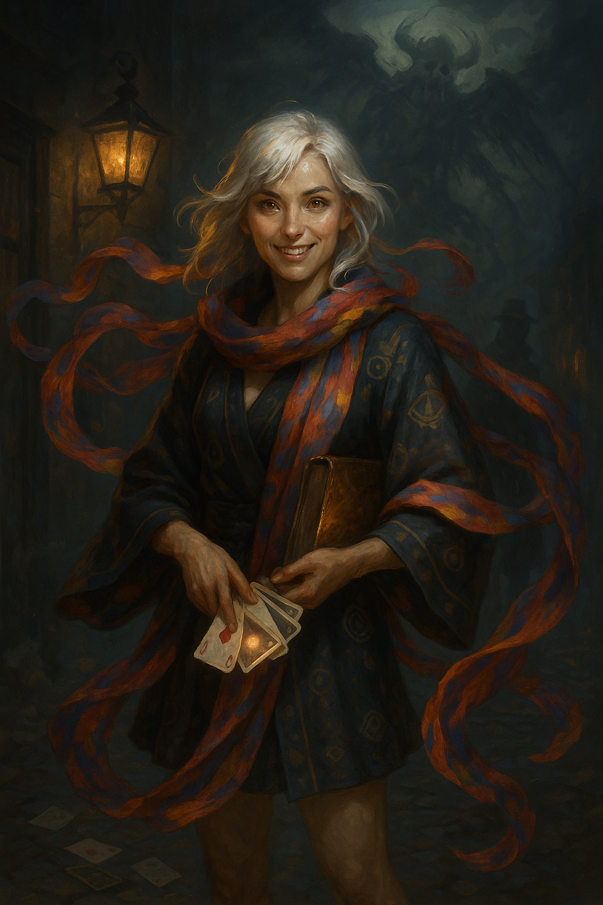

Cephala Fortina¶
Keywords: Fortune-teller, survivor, superstition, loot goblin, mystery, cosmic horror, trauma

"The cards know things I don't. That's not mysticism—that's pattern recognition. I've just learned to pay attention."
A wayfaring fortune-teller bound to a shattered celestial entity, carrying an incomplete deck of cards that remember a people the world has forgotten. She reads futures for coin, hoards trinkets like a magpie, and dispenses folk cures that involve an alarming amount of screaming.
Character Overview¶
Species: Aasimar
Class: Warlock 5 (Great Old One)
Background: Charlatan
Age: 25
Alignment: Chaotic Neutral
Quick Intro¶
Quick Intro
At the Table
- Loot goblin extraordinaire—constantly scanning peddler stalls for undervalued goods, knows the resale value of everything, pockets interesting trinkets compulsively
- Deeply superstitious—burns sage before sleeping in new places, refuses to camp near dead trees in triangular formations, has bizarre folk cures for everything (many involve screaming)
- Relentless matchmaker—reads romantic tension like she reads cards, meddles affectionately, offers terrible advice that somehow occasionally works
- Combat role: Eldritch blast artillery with battlefield control; squishy but mobile
Backstory (Short Form)
Cephala grew up loved by the Fortina family, wealthy perfumers who took her in as a foundling. For ten years she traveled with her older brother gathering rare ingredients, always carrying the strange deck of cards she'd been found with as a toddler. At fifteen, Inquisitors ambushed them on the road. Her brother died buying her escape. When she tried to return home, she watched from an alley as her family was arrested for harboring her—whatever she was, it endangered them. She dyed her hair black and took to the roads, becoming a fortune-teller to survive. Ten years later, just as she'd started to relax, a pleasant middle-aged man sat down for a reading and her cards went haywire: Disguisal. Danger. Enslavement. She pulled one more—Flight—and ran. The Inquisitor Morben cornered her in an alley, and her dormant celestial blood ignited in self-defense. Now bound to the Tattered Seraph through her cards, she's hunting for answers about her vanished people while staying ahead of the man who witnessed her awakening.
Playing Cephala
- Combat: Eldritch blast from range, use terrain and Misty Step to stay mobile. She's fragile—position carefully.
- Roleplay: Fortune-teller voice for strangers (theatrical, mysterious), drops it with friends (blunt, practical). Constantly fidgeting with trinkets or shuffling cards. Processes social information through scent—can smell when people are lying or afraid.
- Party Synergy: Natural face with high Charisma, but her superstitions will derail plans. She'll insist the party follow bizarre protocols before important encounters. Takes vicarious joy in others' happiness since she can't build lasting connections herself.
Deep Dive¶
Full Context and Story
Backstory¶
Cephala's earliest memories are of scent and warmth. The Fortina estate smelled like layers of jasmine, frankincense, and rose oil—the family fortune built on rare perfumes traded across continents. Unlike the cold aristocratic household you might imagine, the Fortinas were boisterous, loving, and numerous. Three older brothers, two sisters, cousins constantly underfoot, and parents who ran the business with equal parts shrewdness and generosity.
They'd found her on the steps when she was barely two years old, clutching a deck of strange cards. No note, no explanation. Just a pale child with unsettling eyes and a battered deck that didn't match any playing cards the Fortinas recognized. They took her in without hesitation, raised her as their own, treated the cards as harmless toys. Cephala never lost or damaged a single one—even as a toddler, she was uncharacteristically careful with them.
Her oldest brother, Davian, was twelve years her senior. When he started traveling to gather rare botanical ingredients for the family business, he brought her along. By the time she was fifteen, she knew the ingredient routes as well as he did, could identify therapeutic herbs by scent alone, haggle in three languages, and spot a genuine saffron thread from ten paces. The Fortinas had trained her nose the way other families train musical pitch.
She still played with her cards on those trips—shuffling them absently, doing practice readings she'd learned from street fortune-tellers in various cities. Davian would tease her about it, call them her "magic toys." She'd respond that they were just stupid cards, affecting the typical fifteen-year-old disdain for things she secretly loved.
The Last Trip¶
They were three days from home when she started pulling the same card over and over: Danger.
Morning reading: Danger.
Midday, shuffling while they walked: Danger.
Evening, sitting by the fire: Danger.
Davian noticed her getting frustrated. "Maybe we should turn back," he joked.
"They're just stupid cards," she snapped, shoving the deck back in her pocket.
The Inquisitors came the next morning. Not one—a coordinated team. This wasn't random patrol. This was targeted operation. Davian saw them first, grabbed her, shoved her toward the treeline.
"Run. Get home. Tell Mother—"
She didn't see him die but she heard it. The divine smiting, the questions shouted, his refusal to answer. She ran until her lungs burned, then kept running. Took back roads toward the city, sleeping in ditches, stealing food from farmhouses.
Three days later she reached home. Saw Inquisition banners outside the Fortina estate from two streets away. Hid in an alley and watched as her family was led out—not in chains, but "for questioning." Methodical. Polite. Thorough investigation.
She understood immediately: her presence would confirm everything. Going home would doom them.
She found a tavern, dyed her hair black in the washroom, stole different clothes from a market stall. Became someone else. Started moving and didn't stop.
The Ten Years After¶
Survival meant staying invisible. She learned fortune-telling properly—not as performance but as craft. The cards that had been toys became tools, then anchors. That fifteen-year-old who'd called them stupid was buried under a decade of them being right about everything that mattered.
She developed the merchant's eye her brother had taught her, but refined it for survival. Scour every peddler's stall for undervalued goods, resell them in the next town. Make coppers here and there. Never own more than you can carry. Keep moving.
She picked up superstitions like burrs—protection rituals from a dozen cities, folk cures from village wise women, traveler's protocols that might be nonsense or might be the thing that keeps you alive when the cards start acting strange. She couldn't afford to dismiss anything anymore. The cards had warned her about Danger and she'd called them stupid, and Davian died for it.
For the first eight years, she had no contact with the Fortinas. She paid street children to bring her news, hired informants to verify they'd been released and were alive. Only in the last year, when she was absolutely certain the Inquisition had moved on, did she risk a carefully anonymous letter: I'm alive. I'm sorry. I can't come home.
She sent three more after that. Never explained why she left. Let them assume she was still looking for Davian, still grieving, couldn't face them. It was easier than the truth.
She'd just started to believe she might be safe when the pleasant middle-aged man sat down for a reading.
The Morben Incident¶
He had kind eyes. Asked for a standard fortune reading, paid upfront, seemed genuinely curious. She shuffled the deck, laid out the spread.
Disguisal. Danger. Enslavement.
She stared at the cards. This made no sense. She looked up at him—still smiling, patient, waiting. Her hands started shaking. She gathered the cards, reshuffled, tried again.
Disguisal. Danger. Enslavement.
Same three cards. Same order.
Goosebumps crawled up her arms. This was the Danger card all over again. The cards knew.
She pulled one more card, hands trembling: Flight.
She looked at him. Took the cards. Smiled. "I need to reshuffle these properly. One moment."
And bolted.
He caught her in an alley—of course he did, she was repeating the same pattern, cornered again, divine binding magic manifesting in his hands. But this time she was ready for it. This time when her blood ignited and wings of light erupted from her shoulders, she used them. Crashed through a window, kept running, didn't stop until dawn.
The Tattered Seraph found her that night in dreams.
The Tattered Seraph¶
The Seraph exists at thresholds between worlds, unable to manifest fully in material reality. It appears veiled in countless layers of torn, stained fabric, each piece stitched with hundreds of eyes—blinking, weeping, staring, sleeping. Its voice fragments across multiple registers simultaneously, as if it doesn't know what the end of each sentence will be until it speaks them.
It doesn't command. It requests, offering visions like shattered mirror pieces—some clear, some murky, all enigmatic. It claims to have been worshipped by a people now erased from time. Cephala may be their last spark.
The Seraph can only communicate with her through two channels: dreams and the cards. Outside those frameworks, it's silent. The cards were her inheritance, fragments of something older than history. She's carried them her entire life without understanding what they were. Now she knows: they're the Seraph's voice, the only way it can speak to her in waking hours.
The deck is incomplete. She always assumed she had all of them—they'd been with her since infancy, carefully preserved, never damaged. But the Seraph has shown her visions of cards that don't exist in her collection. Somewhere there are more, scattered across the world by whatever catastrophe erased her people.
Finding one would be proof. Proof they existed. Proof she's not alone.
Mechanics and Flavor¶
The Seraph uses Great Old One mechanics, but its aesthetic is corrupted divinity rather than tentacled cosmic horror. Cephala's Eldritch Blast manifests as ragged bolts of tarnished radiance, like light filtered through centuries of stained glass shattered and poorly reassembled. Arms of Hadar appears as thrashing strips of fabric covered in weeping eyes rather than tentacles.
The Seraph has a scent signature Cephala recognizes immediately: rancid rose oil, mildew, and old parchment. The balance shifts—sometimes the rose is almost fresh, nearly hopeful. Other nights it's pure rot. The mildew can recede into sun-warmed wool or breathe like decomposition.
When the Seraph needs to guide her toward something in the waking world, it uses the cards or sensory echoes. She'll catch the Seraph's scent near a specific doorway. Shadows around an object will seem to writhe with watching eyes. A piece of fabric in a market stall will feel identical to the Seraph's layered veils—turns out it's a rare traditional weave from a specific region, giving her a geographic lead.
Personality¶
Cephala works constantly. Her hands are always occupied—sorting trinkets, shuffling cards, examining goods at market stalls, burning protective sage, arranging copper pieces by year and mint. Stillness feels dangerous. If she stops moving, she might become visible again.
She has two voices: the fortune-teller performance (theatrical, deliberately mysterious, slightly sing-song) and her actual voice (blunt, practical, prone to tangents about folk medicine). Strangers get the performance. The party gets the real thing—usually.
She processes social information through scent as much as words. Can tell when someone's lying because their sweat chemistry changes. Knows a location is dangerous because it smells wrong—too clean, or like the Seraph's rot-rose signature, or simply off in ways she can't articulate but has learned to trust. The Fortinas trained her to analyze perfume compositions; she's weaponized that training into reading people and places.
Her superstitions drive party members insane. She refuses to camp near specific tree configurations, insists on burning sage before sleeping anywhere new, won't drink from shared wells without dropping a silver coin in first, demands the party follow bizarre protocols before major encounters. Sometimes these are genuinely protective (the mistletoe against hags actually works). Sometimes they're just neurotic habits (screaming your deity's name down a well won't cure a sore throat, probably). The party never knows which is which, and neither does she.
She's a relentless matchmaker because she can't have lasting connections herself. Reads romantic tension before anyone admits it exists, meddles affectionately, offers advice ranging from surprisingly insightful to absolutely deranged. Takes genuine joy in others' happiness—it's vicarious attachment that doesn't risk her own exposure.
The loot goblin behavior is survival economics refined into compulsion. She can't walk past a peddler's stall without scanning for undervalued goods. Knows maker's marks, regional craft signatures, which trinkets will resell for three times their asking price in the next city. Hoards coppers but isn't miserly—she just needs to always be working or she feels unsafe.
Personality Traits¶
"I can read a room the way my family read perfume notes—base, middle, top. Most people only notice the surface."
Ideals¶
"The cards don't lie. People do, institutions do, but the cards show what's actually there."
Bonds¶
"My family survived because I stayed away. That's the only relationship that matters—the one I'm not in."
Flaws¶
"I've left people behind in every city I've ever visited. At this point, I'm not sure I remember how to stay."
Sample Quotes¶
When looting:
"Wait—this merchant doesn't know what they have. See that maker's mark? This is worth three times what they're asking. No, don't look impressed, it'll drive the price up."
When superstitious:
"We're not camping here. I don't care if it's raining. This clearing has three dead trees in a triangle. Do you want to wake up possessed? Because that's how you wake up possessed."
When matchmaking:
"I'm just saying, the way the ranger looks at you when you're sharpening your sword is the same way my brother looked at the baker's daughter right before he finally—anyway. You should ask them to help with your gear maintenance more often. Trust me on this."
When reading fortunes (performance voice):
"The cards speak in symbols, dear. This one? The Exile. Someone close to you chose distance over comfort. They're still out there, still thinking of you. Whether that brings you peace or sorrow—well, that's the question the cards can't answer."
When actually spooked (flat, quiet):
"Pack your things. We're leaving. Now. I don't care about the job. The cards just showed me Betrayal three times in a row and this place smells like rot under the perfume. We're leaving."
Themes and Inspirations¶
Cephala explores survival guilt, protective exile, and the weight of inherited trauma. She carries a mystery that predates her existence—her people were erased so thoroughly that even their deity is fragmented into incoherence. The Inquisition that hunts her might be genuinely preventing cosmic catastrophe, or they might be institutional momentum covering up historical crimes. She has no way to know.
Her fortune-telling operates in the space between charlatan and prophet. She performs readings for money, yes, but the cards do know things. Just not reliably. Not predictably. She's spent a decade trying to determine the difference between genuine warning and her own pattern-seeking anxiety.
The three character traits (loot goblin, superstitious, matchmaker) aren't random quirks—they're coping mechanisms for someone who can't build a normal life. She accumulates small portable value because she might need to run at any moment. She follows protective rituals because she's seen invisible forces kill people she loved. She invests in others' relationships because she can't have her own.
Inspirations: The melancholic practicality of The Night Circus, the trauma logic of The Locked Tomb, the street-level magical survival of City of Stairs, the "what if the institution hunting you is actually trying to prevent something worse" ambiguity of The Ministry for the Future.
Key Relationships¶
Key Relationships
Davian Fortina (deceased)¶
Her oldest brother, twelve years her senior. Taught her everything about ingredient gathering, merchant evaluation, and practical travel survival. Called her cards her "magic toys" with affectionate skepticism. Died buying her time to escape when she was fifteen. She doesn't talk about him, but she uses merchant techniques he taught her every single day. The loot goblin behavior is his inheritance refined into survival necessity.
The Fortina Family¶
Large, loving, genuinely kind. Parents who ran a perfume empire with generosity as well as shrewdness. Multiple siblings who treated her as one of their own. She's sent four carefully anonymous letters in the last year after eight years of silence. They assume she's still looking for Davian, still too grief-stricken to come home. She can't tell them the truth: that her presence would endanger them, that whatever she is drew the Inquisition down on them once and might again.
They were investigated thoroughly after her disappearance but released without charges. She's verified through informants that they're alive and the business is thriving. She watches from a distance. She can't go closer.
Inquisitor Morben¶
The pleasant middle-aged man with kind eyes who sat down for a fortune reading. She pulled Disguisal, Danger, Enslavement twice in a row, then Flight, and ran. He cornered her in an alley—same pattern as before, divine binding magic manifesting in his hands—but this time her celestial blood ignited defensively and she escaped.
She doesn't know if he was specifically hunting her or if he recognized what she was during the reading. Either way, he witnessed her awakening. He knows what she can do now. The fact that he hasn't found her again might mean he's given up, or it might mean he's waiting. She checks every crowd for his face.
The Tattered Seraph¶
Her patron, possibly her god, probably a mistake. It claims to remember her people when no one else does. It speaks through her cards and in dreams, offering fragmented guidance that's simultaneously earnest and incoherent. She doesn't know if it's trying to help her or if she's just the only remaining connection it has to the material world—a drowning entity grabbing for anything that floats.
The relationship is more symbiotic desperation than devotion. She needs answers. It needs a witness. Neither of them chose this, but they're stuck with each other.
Notes for the DM¶
Notes for the DM
Playing Cephala's Superstitions¶
Critical guidance: Let her intuitions be meaningful sometimes. Not always—she's neurotic and many of her rituals are genuinely just anxiety responses. But occasionally, when she refuses to enter a building because it "smells wrong" or insists the party follow some bizarre protective protocol, she should be right.
This works best if you establish early that her superstitions are hit-or-miss, then use them strategically:
- The mistletoe she insists the barbarian carry actually provides advantage against the hag's curse
- The building she refused to camp in was genuinely haunted
- The silver coin in the drink reveals poison (silver tarnishes in contact with certain toxins)
- The screaming cure doesn't work, but it does alert the party to approaching danger
The key is unpredictability. If she's always right, it becomes mechanical divination. If she's never right, she's just comic relief. The sweet spot is "often enough that the party starts taking her seriously, but not often enough that they can rely on it."
The Incomplete Deck¶
Cephala's card deck is missing pieces. She doesn't know how many—she's always assumed her collection was complete. The Seraph has shown her visions of cards that don't exist in her current set, but it can't tell her where they are or how many remain undiscovered.
Plot hook structure: Any time you need to connect Cephala to a location, NPC, or subplot, drop a matching card. She finds one in a peddler's stall—identical style, same age, same mysterious origin. How did it get here? Who had it before? Where are the rest?
Each discovered card could: - Unlock a new ritual in her Book of Shadows - Reveal a fragment of her people's history through the Seraph's visions - Point toward another card's location - Contain a message written in a language only the Seraph can read
Recommended cards to introduce: - The Witness (in the possession of another Aasimar who doesn't know what they are) - The Bargain (held by a merchant who acquired it in an estate sale decades ago) - The Threshold (built into a church's foundation, causing structural instability) - The Severed (owned by an Inquisition defector who wants to return it)
Dramatic Questions¶
- What happens when she finds another person of her vanished bloodline?
- What happens if the Inquisition captures her and successfully severs her connection to the Seraph?
- What happens when she discovers her people chose to be erased—and the Seraph is what they were trying to escape?
- What happens if the Fortinas track her down and demand answers?
- What happens when she completes the deck and learns what the full collection was designed to do?
Adventure Hooks¶
The Matching Card: Cephala finds an identical card in a peddler's wares. The peddler bought it from an estate sale three towns north. Investigation reveals a pattern: these cards surface briefly, then vanish as if collected by someone else. Someone is hunting the deck systematically. Are they another descendant? An Inquisitor? The Seraph operating through unwitting agents?
The Fortina Letter: One of her siblings has tracked her through the anonymous letters and hired a mercenary company to bring her home safely. They don't know she's being hunted. Their well-meaning intervention draws Inquisition attention directly to the party.
The Severed One: The party meets another Aasimar who seems oddly mundane—no celestial powers, no divine connection, living a perfectly ordinary life. Cephala's cards react violently in their presence. This person was "disarmed" by the Inquisition years ago, their connection to the Seraph surgically severed. They're happy. Well-adjusted. They pity Cephala. They warn her: the Seraph isn't a patron, it's a parasite, and the Inquisition saved them from it.
The Ritual Site: Following the Seraph's fragmented directions, the party discovers an ancient ritual site where Cephala's people once gathered. The site still holds residual power—and an Inquisition garrison has been stationed there for centuries to prevent anyone from reactivating it. The garrison commander is reasonable, professional, and genuinely believes they're preventing catastrophe. They'll offer to sever Cephala's connection peacefully, for her own good. She'd be safe, powerless, free. The party has to decide if the Inquisition is right.
The Mystery's Ambiguity¶
Don't resolve whether the Inquisition is purely corrupt or genuinely protective too quickly. The most interesting version of this story maintains tension between possibilities:
- Maybe her people were nomadic itinerants whose theological positions threatened institutional religious power (Church eliminating heretics)
- Maybe they were attempting to worship/contain something dangerous and failed, creating the Tattered Seraph as catastrophic mistake (Church cleaning up ancestors' errors)
- Maybe they chose erasure to escape the Seraph's influence, and the Inquisition honors that choice by preventing descendants from reconnecting (protection becoming oppression across generations)
The Seraph itself is unreliable narrator—fragmented, incoherent, possibly lying, possibly too damaged to understand its own nature. Cephala might never get clean answers. The question "what were my people and why were they erased?" could be less important than "who do I choose to become with this inheritance?"
Scent as Investigation Tool¶
Cephala's olfactory processing is supernaturally precise. Use this for: - Social deception detection (sweat chemistry changes when lying) - Environmental danger (rot under perfume, chemical traces) - Tracking the Seraph's influence (the rancid rose/mildew/parchment signature) - Identifying alchemical substances, poisons, or magical residue
Let her player make Perception checks using scent when visual investigation would fail. "You don't see anything unusual, but you smell..." This makes her Fortina training mechanically relevant beyond flavor text.
Mechanical Build and PDF Download¶
Level 5 Build
| STR | DEX | CON | INT | WIS | CHA |
|---|---|---|---|---|---|
| 8 (-1) | 14 (+2) | 14 (+2) | 10 (+0) | 12 (+1) | 18 (+4) |
Combat Stats¶
| AC | HP | Hit Dice | Speed | Initiative | Prof. Bonus |
|---|---|---|---|---|---|
| 15 | 38 | 5d8 | 30 ft. | +2 | +3 |
Saving Throws: Wisdom +4, Charisma +7
Resistances: Necrotic, Radiant
Proficiencies¶
Skills: Deception +7, History +3, Insight +4, Perception +4, Persuasion +7, Sleight of Hand +5
Armor: Light Armor | Weapons: Simple Weapons
Tools: Forgery Kit, Playing Card Set | Languages: Common, [+2 common languages]
Feats¶
- Spell Sniper: Ignore half and three-quarters cover with spell attacks, cast spells in melee without disadvantage, +60 ft. spell range
- Lucky: 3 Luck Points per long rest (reroll any d20 or force enemy reroll)
- Skilled: 3 additional skill/tool proficiencies (taken for merchant evaluation, appraisal, and survival skills)
Equipment¶
Glamoured Studded Leather (appearance-changing armor for maintaining disguises), Component Pouch, Dagger (×2), Sickle, Forgery Kit, Playing Card Set (her mystical inheritance), Book of Shadows (Pact of the Tome)
Carried trinkets: Always has 2d6 interesting small objects she's planning to resell—unusual buttons, carved figurines, distinctive coins, decorative boxes. These change frequently as she buys and trades.
Suggested Magic Items: - Glamoured Studded Leather: Reinforces her need for disguise and mobility - Cloak of Many Fashions: Additional disguise capability, thematically appropriate for someone who's spent a decade being other people - Sending Stones: Could be her way of maintaining contact with the Fortinas without risking physical proximity - Bag of Holding: For the loot goblin who can't stop accumulating interesting objects
Spellcasting¶
Spell Save DC: 15 | Spell Attack Bonus: +7
Spell Slots: 2 (3rd level)
Invocations Known: Agonizing Blast, Repelling Blast, Book of Ancient Secrets, Misty Visions
Cantrips:
Eldritch Blast (manifests as tarnished radiance, broken stained glass light)
Mage Hand (appears as spectral fabric strips with blinking eyes)
Minor Illusion (often used to create scent-based illusions, exploiting her sensory processing)
Prestidigitation (primarily for trinket evaluation and merchant work)
Spells Known:
1st Level: Armor of Agathys, Hex, Charm Person, Illusory Script
2nd Level: Misty Step, Suggestion, Detect Thoughts
3rd Level: Counterspell, Hunger of Hadar (manifests as thrashing fabric with weeping eyes, not tentacles)
Book of Shadows Rituals: Detect Magic, Identify, Comprehend Languages, Find Familiar (appears as a spectral raven made of tattered cloth)
Pact of the Tome: Her Book of Shadows is integrated with her card deck—the book appears when she fans the cards in a specific pattern, manifesting as ancient parchment bound between the cards themselves. The Seraph writes messages in it that she doesn't remember receiving.
Great Old One Features: - Awakened Mind: Telepathy out to 30 feet (the Seraph's communication bleeding through) - Entropic Ward: When hit by an attack, impose disadvantage and gain advantage on next attack (once per short rest)
Aasimar Features: - Radiant Soul: Once per long rest, transform for 1 minute (wings manifest, flight speed 30 ft., bonus radiant damage equal to level once per turn)
Session Zero¶
Session Zero Considerations
Content Notes:
- Witnessed death of loved one: Cephala's backstory includes her brother's death protecting her
- Traumatic separation from family: She witnesses their arrest and chooses exile to protect them
- Religious persecution: The Inquisition hunts her for what she is, not what she's done
- Chronic anxiety and PTSD responses: Her superstitions and compulsive behaviors are trauma-informed coping mechanisms
Discuss these elements in Session Zero. If players aren't comfortable with religious persecution themes or parental/sibling loss, this character can be adjusted—the mystery of her people can exist without the traumatic separation, or the Inquisition can be reframed as different institutional threat.
Representation Notes:
Cephala's scent-based sensory processing is heightened but not framed as disability—it's a trained skill from her Fortina upbringing, refined into supernatural perception. Her anxiety and superstitious behaviors are trauma responses, not inherent mental illness. If players want to engage with these elements more seriously or adjust them, have that conversation.
Table Tone:
This character works best at tables comfortable with:
- Moral ambiguity (the Inquisition might not be purely evil)
- Long-term mysteries without guaranteed resolution
- Characters who are mechanically effective but psychologically damaged
- Humor derived from neurotic behavior (the screaming cures) alongside genuine horror
She's designed for tables that can hold space for "compulsive loot goblin matchmaker" and "survivor of religious persecution hunting for her erased people" simultaneously without either element trivializing the other.